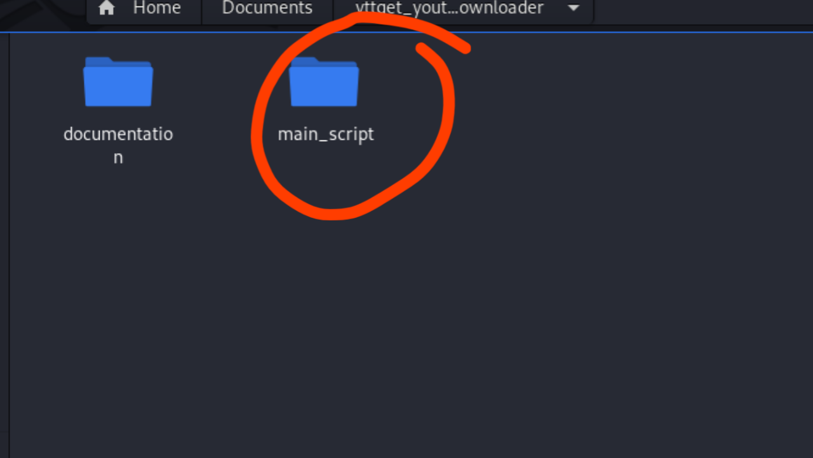
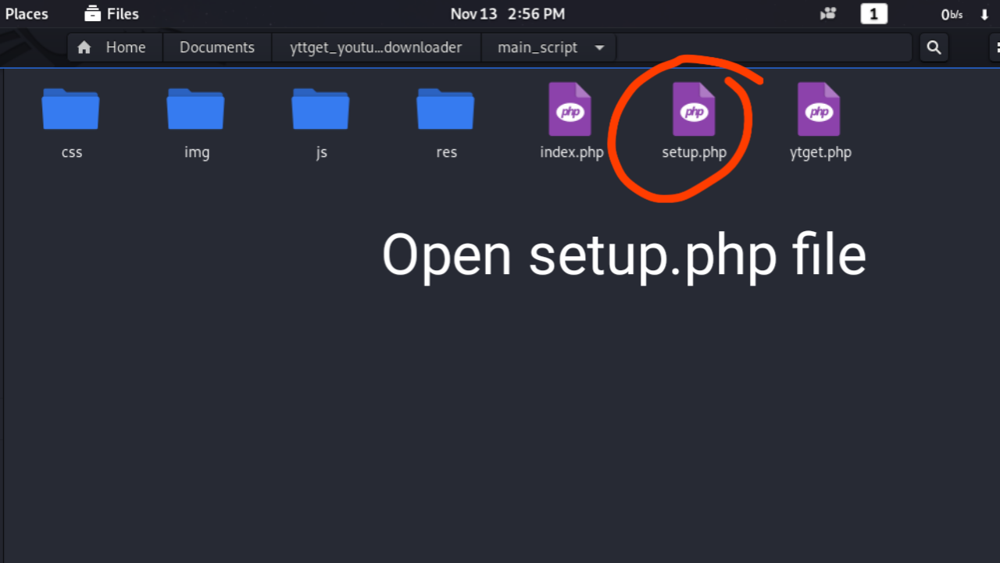
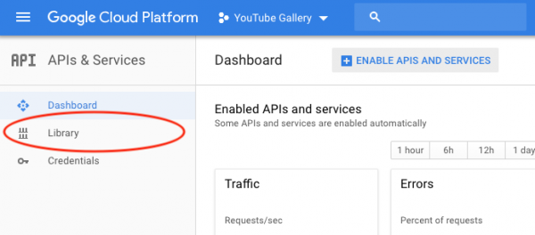
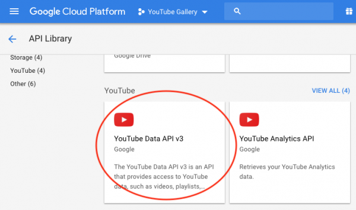
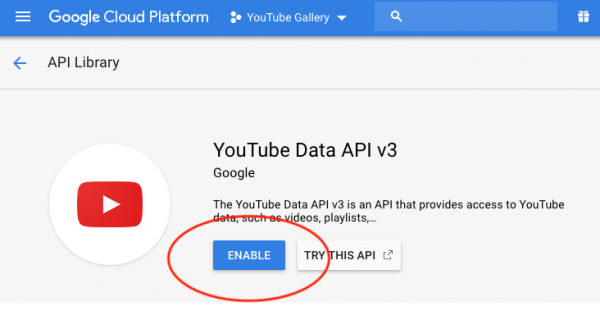

First extracted .zip file and Open main_script folder
This is your main script files. Look here A setup.php file and open this on your text editor .
Chenge This file content on your site
Visit Google API Console and login with your YouTube/Google ID: https://console.cloud.google.com/apis/
In Google API dashboard, click the button "Create Project", then follow the screens, enter a project name and create a new project.
Google API dashboard, click Library on the left menu.
Look for the service YouTube -> YouTube Data API v3:
Click YouTube Data API v3, then click the Enable button to enable the API service
In Google API dashboard, click "Credentials" on the left menu, then click the button Create credentials, select API key from the drop down list.
You YouTube thumbnail Downloader is rady. Uplode script on live Hosting and Start your website